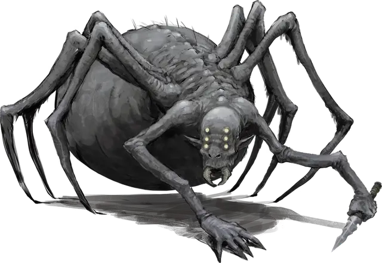

Холдрит
Choldrith
Средний Монстр, хаотично-злой

Класс Доспеха 15 (доспех из шкур)
Хиты 66 (12к8 + 12)
Скорость 30 футов, лазая 30 футов
| мод | спас | ||
|---|---|---|---|
| СИЛ | 12 | +1 | +1 |
| ЛОВ | 16 | +3 | +3 |
| ТЕЛ | 12 | +1 | +1 |
| мод | спас | ||
|---|---|---|---|
| ИНТ | 11 | +0 | +0 |
| МДР | 14 | +2 | +2 |
| ХАР | 10 | +0 | +0 |
Навыки Атлетика +5, Религия +2, Скрытность +5
Чувства тёмное зрение 60 футов, пассивное Восприятие 12
Языки Подземный
Опасность 3 (700 опыта)
Бонус мастерства +2
Среда обитания Подземье
Особенности
Наследие фей. . Холдрит получает преимущество на спасброски против очарования и не может быть магически усыплена.
Использование заклинаний. . Холдрит является заклинателем 4–го уровня. Её базовой характеристикой является Мудрость (Сл спасброска от заклинаний 12, +4 к попаданию заклинаниями). У холдрита подготовлены следующие заклинаниями жреца:
• Заговоры (неограниченно): указание [guidance], починка [mending], сопротивление [resistance], чудотворство [thaumaturgy].
• 1 уровень (4 ячейки): порча [bane], лечащее слово [healing word], убежище [sanctuary], щит веры [shield of faith].
• 2 уровень (3 ячейки): удержание личности [hold person], божественное оружие [spiritual weapon] (кинжал).
Паучья ходьба. . Холдрит может взбираться по сложным поверхностям, включая вверх ногами по потолку, без необходимости проходить проверки.
Чувствительность к солнечному свету. Находясь на солнечном свете холдрит получает помеху на броски на попадание, а так же на проверки Мудрости (Восприятие), основанные на зрении.
Чувство паутины. . Будучи в контакте с паутиной, холдрит знает точное местоположение любого другого существа, находящегося в контакте с этой паутиной.
Паутинопроходец. Холдрит игнорирует любые ограничения в движении, вызванные паутиной.
Действия
Кинжал. . Рукопашная или Дальнобойная атака оружием: +5 к попаданию, досягаемость 5 футов или дистанция 20/60 футов, одна цель. Попадание: 5 (1к4 + 3) колющего урона плюс 10 (3к6) урона ядом.
Паутина (Перезарядка 5–6). Дальнобойная атака оружием: +5 к попаданию, дистанция 30/60 футов, одно Большой существо или меньше. Попадание: Цель опутана паутиной. Действием опутанная цель может пройти проверку Силы Сл 11 и вырваться из паутины при успехе. Паутину также можно атаковать и уничтожить (КД 10; 5 хитов; уязвимость к урону огнём; иммунитет к дробящему, урону психической энергией и яду).
Описание
См. дополнительно статью: "Бестиарий: Хитины"